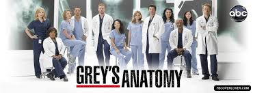
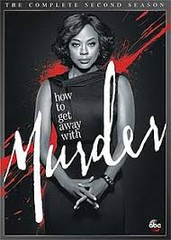

1) Traveling to new beautiful places(beaches, viewpoints, cities...)
2)Watching TV Shows- usually from netflix or hulu. (Check out my favorite shows)
•Grey's Anatomy- This is such a good show. I know there are many seasons now but it's so worth it. Let me tell y'all the sh** that goes down in that hospital is crazy. And Jesse Williams acting as Jackson Avery is a big plus as well.
/img>
•The Office- This is a funny show to watch. The idiocity in there is incredible and I enjoy that a lot. I reccomend.
•How to Get Away With Murder- WoW! This just might be my favorite because it is a different level and Viola Davis starring in it makes it that much better. It has to do with law students and murders and hiding it as you can tell from the title.

Ofc there are more that I watch like stand up comedies, romcoms, movies, and some really good "based on true story" shows.
3) Listening/Finding new music(& dancing) - I listen to HipHop/Rap, R&B, and maybe an exception to pop sometimes. My top artists right now would be Chris Brown, YG, J Cole, HER, and always QUEEN B.